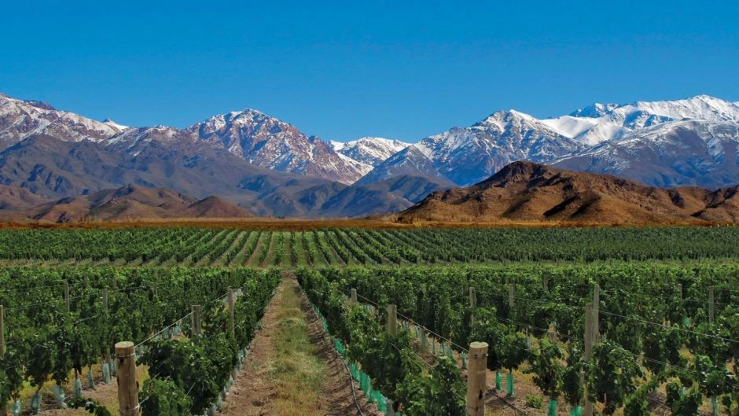
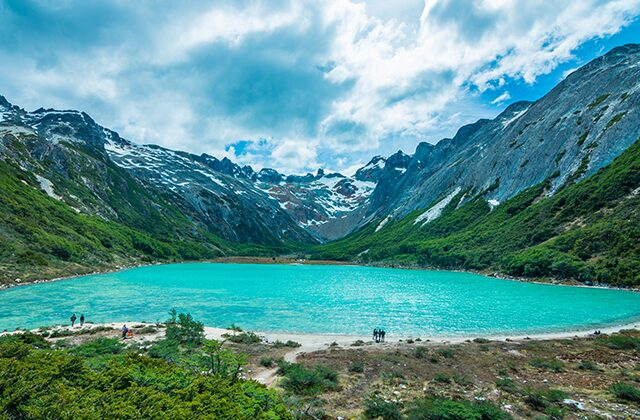
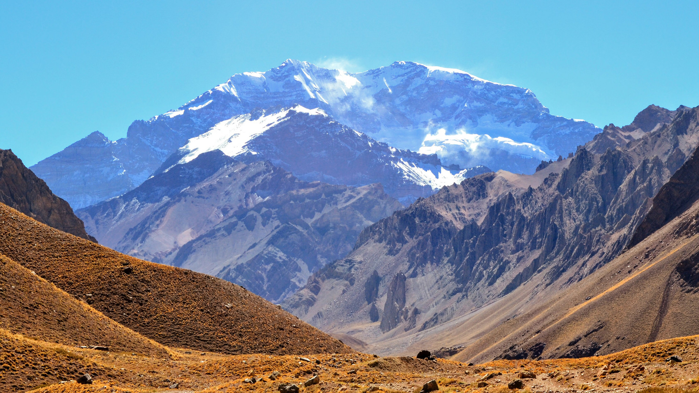

A Rota do Vinho
Mendoza concentra mais de 70% da produção de vinho do país. A região transformou um deserto de altitude em um oásis agrícola, tornando-se a capital mundial da uva Malbec graças à água do degelo dos Andes.

Ushuaia
Apelidada de "A Cidade do Fim do Mundo".
Localização: Fica no extremo sul da província da Terra do Fogo, na Patagônia Argentina.
Geografia: Está situada em uma baía às margens do Canal de Beagle, cercada pelos Montes Martial, bem na ponta sul do continente americano.
Curiosidade: É considerada a cidade mais austral (ao sul) do mundo, servindo como a principal base para expedições rumo à Antártica.

Monte Aconcágua
Conhecido como teto das americas, Ainda na região de Mendoza fica o Monte Aconcágua. Com incríveis 6.960 metros de altitude, é a montanha mais alta de todo o hemisfério sul e ocidental, sendo superada apenas pela Cordilheira do Himalaia, na Ásia.
Localização: Está situado dentro do Parque Provincial Aconcágua, na cordilheira dos Andes.